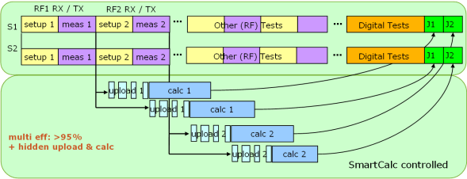

SmartCalc hidden calculation
SmartCalc (SMC) provides an implementation framework for hidden upload and multithreaded calculation for multiple sites which works only within universal test methods (UTM).
While the optimal testflow order needs to be managed by the user, the threads and CPU cores used for hidden calculations are assigned automatically by the SMC framework.

This section describes the steps necessary to implement the SMC framework, which then will take care about the hidden calculation. In addition hints are given to optimally make use of the SMC capabilities.
Steps to perform SMC hidden calculation
- Implement the SMC framework as described in the key steps to implement
SmartCalc to a test program by:
- Prepare your test program for parallel execution.
- Encapsulate upload, calculation and test statements into your
SMC_backgroundProcessing()method. - Synchronize calculations, binning and data logging.
- Use SMC APIs.
- Consider to use Hidden Data upload to further optimize efficiency.
Hints to make best use of SMC
- Put the 'longest' functional test first in your block of functional tests, thus segmented upload becomes more efficient.
- Ensure that the segment (package) size is set up correctly, which may vary depending on the HW of your tester.
- Ensure the hidden upload is triggered during functional tests, digital and analog capture.
- Remove unnecessary FLUSH() calls.
- Ensure debug flags are switched off.